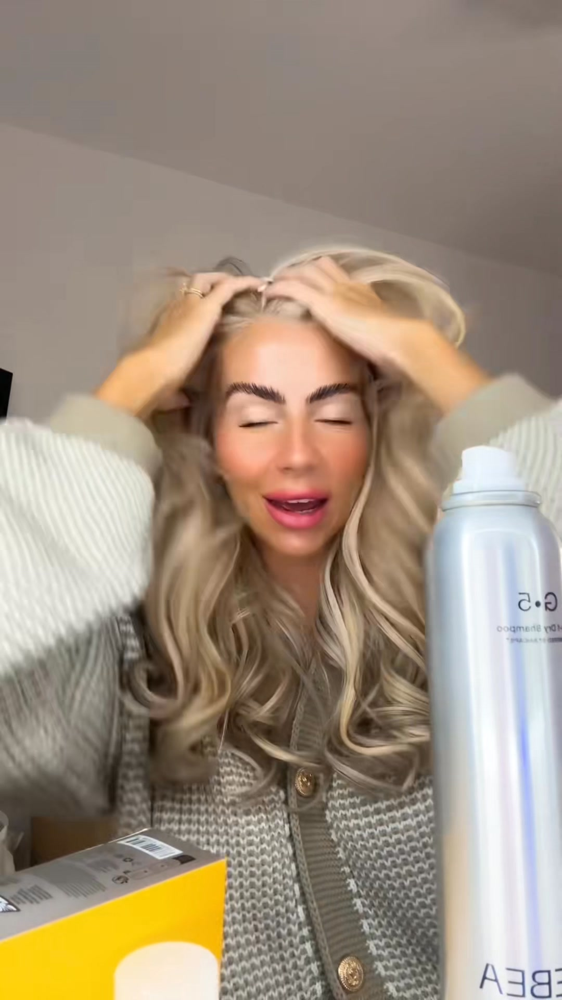
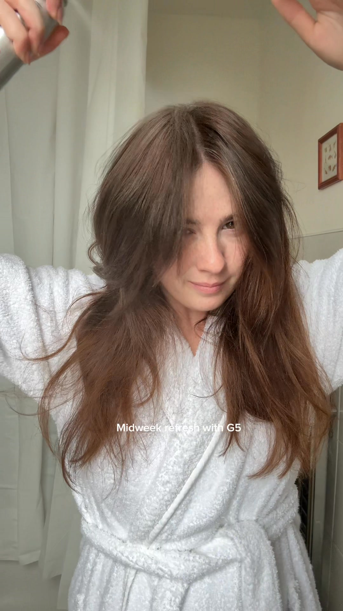
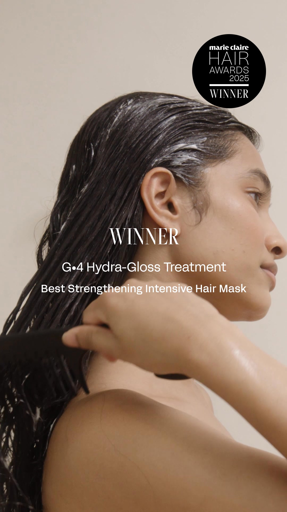
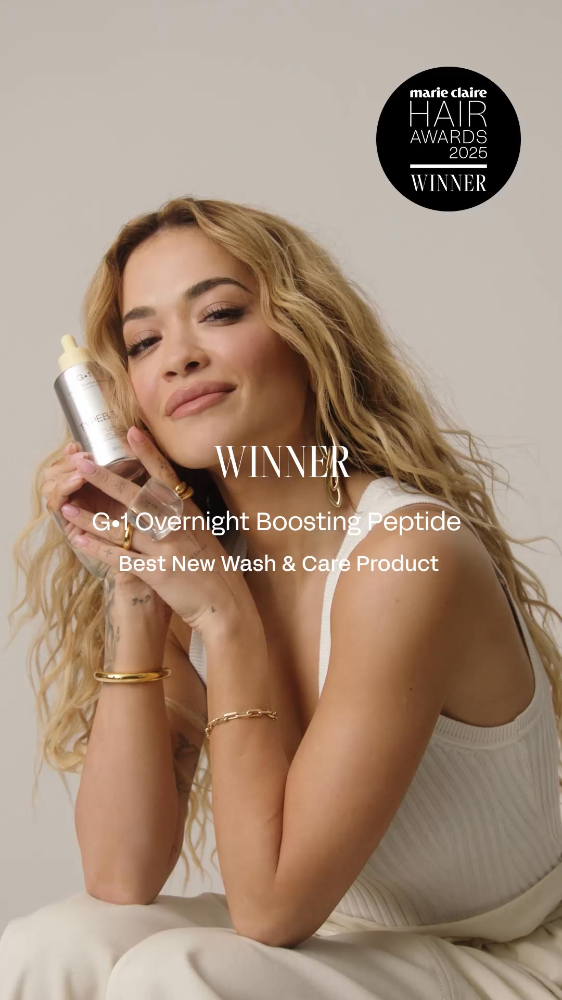
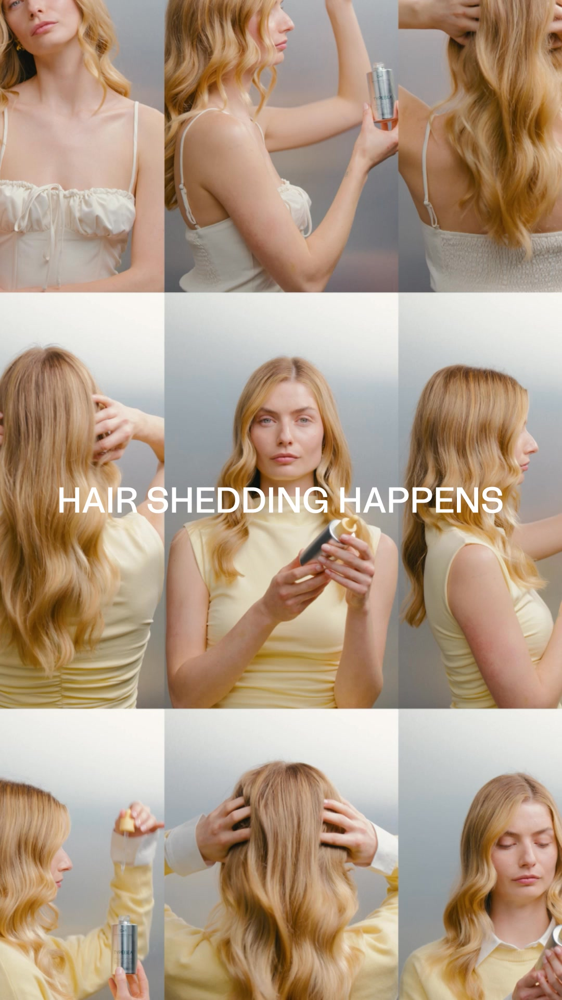
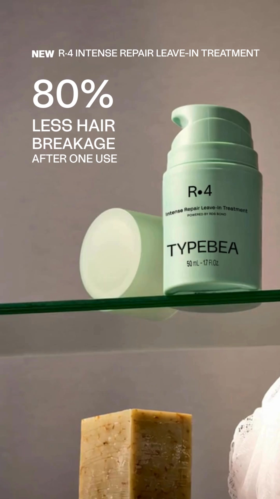
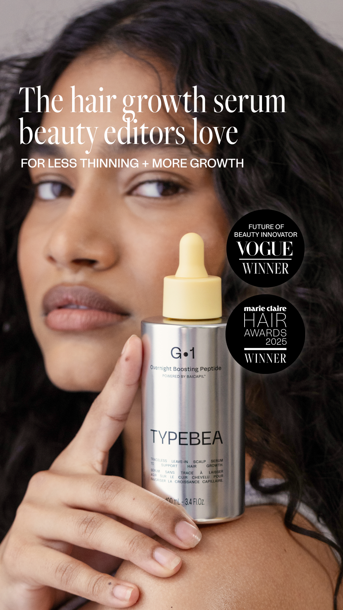
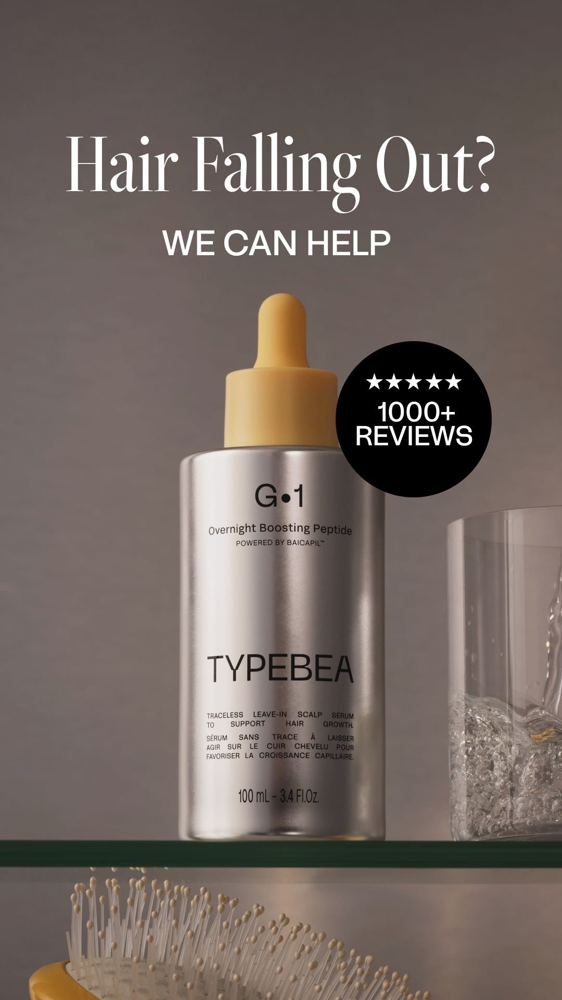
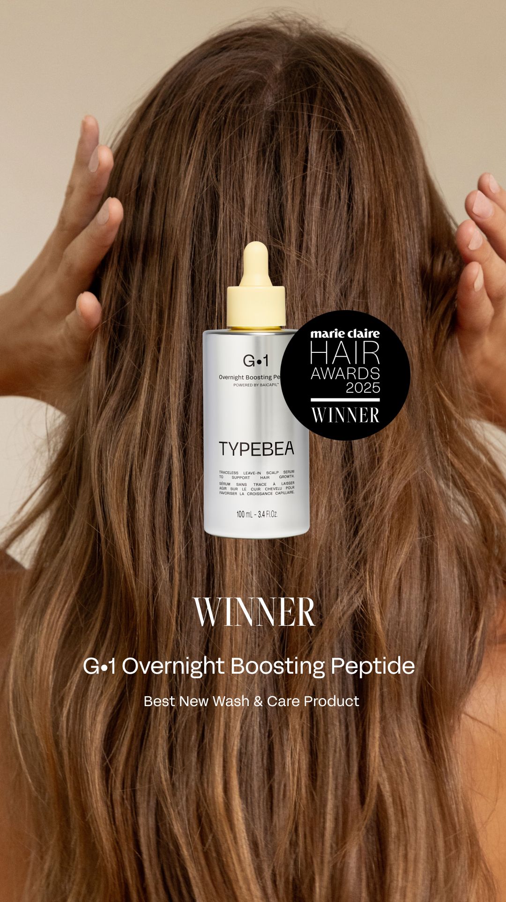

Creative audit · prepared for TYPEBEA
I pulled 112 of your live ads from your public Meta Ad Library and mapped them: every angle, audience, and awareness level in that batch. Here is what is working, where you are crowded, and the one gap with the highest odds of paying off.
Your diversity score is how widely the account spreads across audiences, awareness stages, angles, and formats. Your strongest area is format variety. Where you lose the most is coverage (how many audience-by-awareness boxes have an ad).
The one finding that matters
Across the 112 ads I pulled, almost nothing meets damaged / over-processed hair the moment they first feel the problem. You skip the stage where they go looking for a reason.
What is already working
I can’t see inside your ad account, so I rank winners the only honest way from the outside: how long an ad has stayed live. The longer it runs, the more likely it is paying. Here are all 11, longest-running first, broken down the four dials I mix to build ads: Concept, Angle, Style, Hook (CASH), plus the avatar and awareness stage each one hits.
| Concept | Angle | Style | Hook | Hook type | Avatar | Awareness | Run | ||
|---|---|---|---|---|---|---|---|---|---|
| Rita Ora festival, '#1 Sephora growth serum' | Social Proof Led | Video · Lifestyle montage | “The hair growth serum that everyone's talking about” | Authority Reaction | Thinning / shedding (growth-serum core) | Solution-aware | 36d | Ad ↗ | |
 | 'How I skip washing', big-bouncy dry shampoo | Outcome Led | Video · Creator talking to camera | “Okay, how do I keep my hair so big and bouncy and get away with not washing it for such a long time?” | Curiosity | Fine / flat / greasy hair wanting volume (dry shampoo) | Solution-aware | 33d | Ad ↗ |
 | Midweek refresh demo, 5-star G5 dry shampoo | Social Proof Led | Video · Product demo | “Midweek refresh with G5” | Relatability | Fine / flat / greasy hair wanting volume (dry shampoo) | Solution-aware | 33d | Ad ↗ |
 | Marie Claire award for the G4 gloss mask | Social Proof Led | Video · Lifestyle montage | “WINNER G4 Hydra-Gloss Treatment Best Strengthening Intensive Hair Mask” | Authority Reaction | Damaged / over-processed hair (repair, gloss, styling) | Product-aware | 32d | Ad ↗ |
 | Rita Ora holds the award-winning G1 serum | Authority Expert | Video · Lifestyle montage | “WINNER G•1 Overnight Boosting Peptide - Best New Wash & Care Product” | Authority Reaction | Thinning / shedding (growth-serum core) | Solution-aware | 32d | Ad ↗ |
 | 'Hair shedding happens', split-screen demo | Problem Led | Video · Product demo | “HAIR SHEDDING HAPPENS” | Problem Led | Thinning / shedding (growth-serum core) | Problem-aware | 32d | Ad ↗ |
 | R4 leave-in, '80% less breakage' close-up | Mechanism Led | Video · Product demo | “NEW R-4 INTENSE REPAIR LEAVE-IN TREATMENT 80% LESS HAIR BREAKAGE AFTER ONE USE” | Bold Claim | Damaged / over-processed hair (repair, gloss, styling) | Solution-aware | 32d | Ad ↗ |
 | 'The serum beauty editors love', award badges | Social Proof Led | Static · Product shot | “The hair growth serum beauty editors love - FOR LESS THINNING + MORE GROWTH” | Authority Reaction | Thinning / shedding (growth-serum core) | Solution-aware | 32d | Ad ↗ |
 | 'Hair falling out?' 1000+ five-star reviews | Problem Led | Static · Product shot | “Hair Falling Out? WE CAN HELP” | Problem Led | Thinning / shedding (growth-serum core) | Problem-aware | 32d | Ad ↗ |
 | Long-hair hero, Marie Claire winner badge | Social Proof Led | Static · Product shot | “Award Winning Hair Care - Approved by the best in the business” | Authority Reaction | Broad / aspirational (routine, sitewide sale) | Product-aware | 31d | Ad ↗ |
| 'Reminder of the before', greasy-to-volume | Curiosity Secret | Video · Before / after video | “Just a reminder of the before, please.” | Before After | Fine / flat / greasy hair wanting volume (dry shampoo) | Solution-aware | 30d | Ad ↗ |
Your account, mapped
Avatars down the side, awareness stages across the top. Every ad you run lands in one box. The goal is simple: fill the gaps.
| Avatar | Unaware | Problem-aware | Solution-aware | Product-aware | Most-aware |
|---|---|---|---|---|---|
| Thinning / shedding (growth-serum core) | 4 | 27 | 7 | ||
| Fine / flat / greasy hair wanting volume (dry shampoo) | 1 | 13 | |||
| Damaged / over-processed hair (repair, gloss, styling) | 15 | 11 | |||
| Busy / active / traveling women (gym + on-the-go) | 5 | 6 | 6 | ||
| Broad / aspirational (routine, sitewide sale) | 8 | 7 | 2 |
You cover 13 of 25 boxes, and your busiest lane holds 24.1% of your ads. That is healthy spread. Your biggest opening is Damaged / over-processed hair (repair, gloss, styling) x Problem-Aware. And your entire Unaware column is empty.
By the numbers
Straight from the ads, no interpretation. This is the objective shape of what you run.
Your current mechanism
83 of 112 ads name a cause.
The unique fix your ads repeat.
Only 83 of 112 ads name a specific cause. People believe a promise far more when they understand the reason behind it. Pick one clear cause, own it, and repeat it in every ad.
Where the traffic goes
Ranked by how many ads point to each and how long they run. It shows what you trust, and what you have not tried yet.
You send most traffic to product pages, landing pages. I do not see any advertorials in the mix, worth a look, not a prescription.
The gap I would attack first
This play already works elsewhere in your account, just not for damaged / over-processed hair yet. A near-copy of the play already working elsewhere in your account is a high-odds test, close to something you have already proven.
I found 12 gaps in total, all ranked by odds. This is number one. I’d love to show you the other 11 and build the first ad to fill this one.
Your biggest next play is problem-aware ads for damaged / over-processed hair. I think both would work for a simple reason: you have already proven this audience buys, and that play plus a single clear message are the two biggest levers you are not pulling yet. Reply to my email and I will build the first one in less than 24 hours.
Fix the gap in 24 hoursHow to read this: this is built entirely from your public Meta Ad Library, what is running and for how long, never your private cost, click or revenue numbers. "Working" means an ad is long-running or heavily scaled, which is a strong free signal, not confirmed profit. Treat the plays above as where I would test, not gospel.
Prepared by Ben Lomon · July 2026